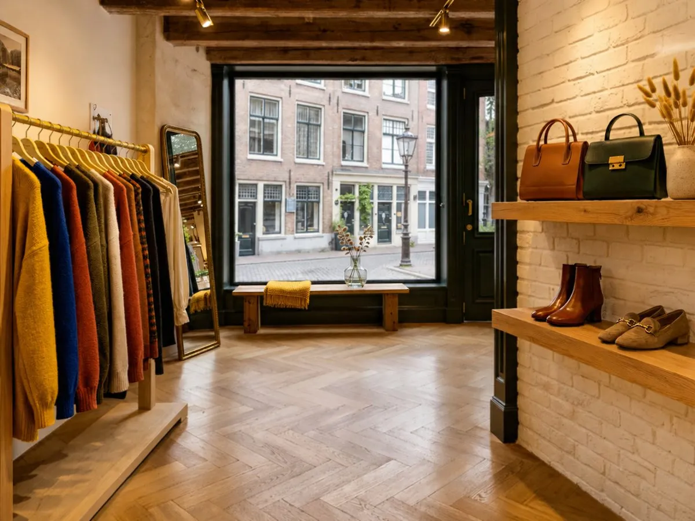

Kledingwinkels in Nijmegen: de leukste winkel per stijl
Bijgewerkt op 22 november 2026.
De grote ketens vind je in de Broerstraat en de Marikenstraat. Maar Nijmegen heeft ook veel kleine zaken waar de eigenaar zelf inkoopt en je persoonlijk helpt. Daarom zetten we de leukste kledingwinkels per stijl op een rij, met de meeste in en rond de Lange Hezelstraat.

Zo hebben we gekozen
We lazen in november 2026 de websites van de kledingwinkels in onze bedrijvengids. We kozen vooral zelfstandige zaken met een duidelijke eigen stijl. Veel kleine winkels zijn op maandagochtend dicht en alleen op koopzondag open, dus kijk even naar de tijden.
Boetieks in de Lange Hezelstraat
De Lange Hezelstraat is de oudste winkelstraat van Nijmegen. Je vindt er geen ketens, maar wel veel kleine damesboetieks.
Ming en Mikis: speels en met een knipoog
Sinds 2008 zit Ming en Mikis in een monument met glas-in-lood, een middeleeuwse kelder en een klein stadstuintje. De kleding is vrouwelijk en speels, van merken als Sessùn en Dame Blanche.
Bijna elk seizoen hangt er wel een nieuw, nog onbekend merk. Je vindt er ook sieraden, sjaals en schoenen.
Goed voor: wie iets wil wat je niet overal ziet.
Bob & Bill: twee winkels in één straat
Bob & Bill heeft twee adressen in de Lange Hezelstraat, met blouses, jeans, blazers en truien. Er komen elke week nieuwe stukken bij, en er is een aparte lijn voor lange vrouwen.
Het team geeft je graag stijladvies. Je kunt er zeven dagen per week terecht, op zondag vanaf de middag.
Goed voor: lange vrouwen en wie ook op zondag wil shoppen.
Stuif Zo: van elke top maar één
In dit kleine winkeltje hangt alles op kleur, en van elke top is er maar één, wel in meerdere kleuren. De kleding is van zachte stoffen als zijde en linnen, in maat 38 tot en met 46/48.
De eigenaar koopt alles zelf in en past het eerst zelf. Doordeweeks ben je vanaf de middag welkom, op zaterdag de hele dag.
Goed voor: wie rustig en persoonlijk geholpen wil worden.
Herenmode
By Pete: herenboutique van een oud-danser
Pete was jarenlang danser en choreograaf voor hij een herenzaak begon aan de Ziekerstraat. Hij verkoopt eerlijk gemaakte Europese merken, casual en sportief, en een eigen lijn met knitwear.
Een paar merken hangen hier als enige in Nederland. Je krijgt er koffie en de tijd, ook op zondagmiddag.
Goed voor: mannen die iets anders willen dan de ketens.
Van Buren: kostuums en stomerij
In de Lange Hezelstraat koop je bij Van Buren kostuums, overhemden en pantalons, met schoenen en een riem erbij. Je krijgt er persoonlijk advies.
Je kunt er ook je kleding laten stomen. De winkel is open van maandagmiddag tot en met zaterdag, en op de eerste zondag van de maand.
Goed voor: wie een klassiek pak zoekt.
GENTS: van trouwpak tot rokkostuum
Moet je naar een bruiloft of een gala? Bij GENTS in de Molenstraat hangen pakken, smokings, jacquets en rokkostuums, met alle stropdassen en manchetknopen die je erbij nodig hebt.
Zit iets niet goed, dan wordt het door de coupeur vermaakt, ook als je het pak ergens anders kocht. Voor een trouwpak maak je vooraf een afspraak.
Goed voor: de bruidegom en zijn getuigen.
Duurzaam en tweedehands
Blad: rustig passen in Oost
Blad is een ruime damesboetiek tussen de cafés van de Heydenrijckstraat. De winkel zit hier al sinds 2007 en heette eerst Zilch.
Veel merken hebben een keurmerk voor biologisch textiel. Je loopt er van dinsdag tot en met zaterdag zonder afspraak binnen.
Goed voor: wie let op biologische stoffen.
Switch: Nederlandse labels met stylingadvies
Eigenaresse Brenda kiest de collectie zelf, vooral Nederlandse labels, met Deens breiwerk ernaast. Bij het kiezen van de merken let ze ook op duurzaamheid.
De stylisten denken met je mee over pasvorm en comfort. Je kunt er ook op zondagmiddag terecht.
Goed voor: wie midden in het winkelhart persoonlijk geholpen wil worden.
Studio Zoef: tweedehands kinderkleding
Bij Studio Zoef koop je tweedehands kinderkleding van goede kwaliteit. Je kunt er ook zelf kleertjes brengen, tot 25 stuks per keer, en je krijgt een deel van de opbrengst terug.
Er is een speelhoek, dus je kijkt op je gemak rond. Op dinsdag en donderdag is de winkel alleen 's ochtends open.
Goed voor: ouders van kinderen die snel groeien.
Voor kinderen en voor wie iets bijzonders zoekt
Wonder for Kids: kinderkleding en kraamcadeaus
Voor baby's tot kinderen van twaalf vind je hier kleding en schoenen van merken als Mini Rodini en Bobo Choses. Er liggen ook mutsen, knuffels en boeken.
Twijfel je over een maat, dan helpen ze je graag. Op de eerste en laatste zondag van de maand is de winkel ook open.
Goed voor: wie een kraamcadeau zoekt.
Silverado: cowboylaarzen uit Amerika
Sinds 1997 verkoopt Silverado westernlaarzen, cowboyhoeden, western shirts en riemen met flinke gespen. Veel komt rechtstreeks uit de Verenigde Staten.
Je past op je gemak, en ze helpen je met de maat van je laarzen en je hoed. Er is ook een kindercollectie. Open van woensdag tot en met zaterdag.
Goed voor: line dancers en iedereen die echte laarzen wil.
Norah: damesmode in Lent
Woon je in Nijmegen-Noord, dan hoef je voor nieuwe kleding niet naar de stad. Norah in Lent heeft vrouwelijke, draagbare mode in maat 34 tot en met 48.
Elke week hangt er nieuwe collectie. Online bestellingen laat je gratis naar de winkel sturen.
Goed voor: wie in de Waalsprong woont.
Ook goed
- In de Ziekerstraat heeft YAYA tijdloze damesmode in natuurlijke tinten, met een woonlijn ernaast.
- Grote merken en ketens vind je in de Broerstraat, de Marikenstraat en de Molenstraat, en in winkelcentrum Dukenburg.
Liever tweedehands voor volwassenen? Lees kringloopwinkels in Nijmegen.
Meer in onze gids winkelen in Nijmegen.
Veelgestelde vragen
Waar vind je de leukste boetieks in Nijmegen?
In de Lange Hezelstraat, de oudste winkelstraat van Nijmegen. Daar zitten onder meer Ming en Mikis, Bob & Bill en Stuif Zo.
Welke kledingwinkels zijn op zondag open?
By Pete, Switch en Bob & Bill zijn elke zondagmiddag open. Veel kleine winkels in de Lange Hezelstraat zijn alleen op de eerste zondag van de maand open.
Waar koop je een trouwpak in Nijmegen?
GENTS in de Molenstraat heeft trouwpakken, smokings en rokkostuums, en een coupeur die je pak vermaakt. Maak vooraf een afspraak.
Waar koop je tweedehands kinderkleding in Nijmegen?
Bij Studio Zoef aan de Van Welderenstraat. Je kunt er ook zelf kleding brengen om te verkopen.